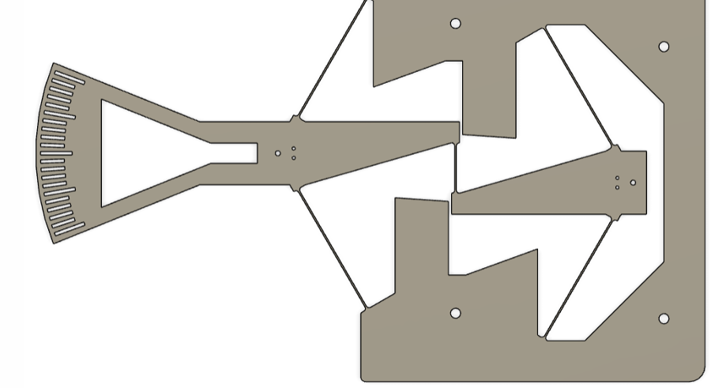
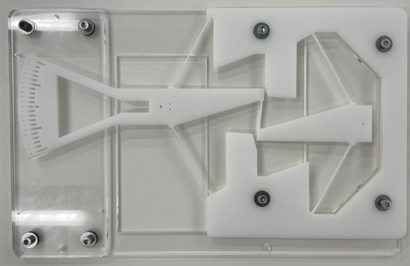
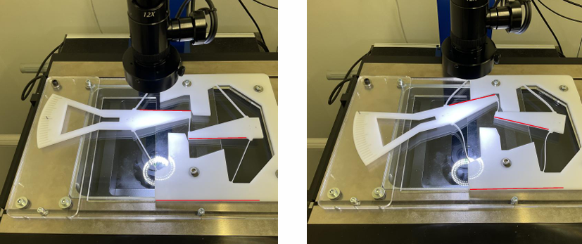
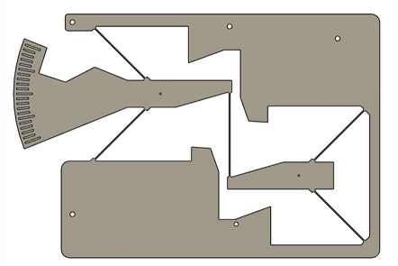
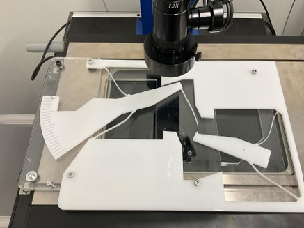
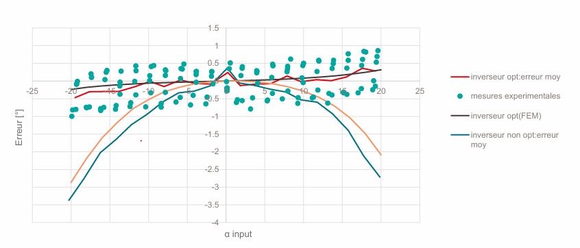

At Instant-Lab, EPFL Neuchâtel (August 2024), I worked on optimising a flexure-guided angular inverter — a compliant mechanism that transmits angular motion from an input arm to an output arm while perfectly inverting its sign (θ_out = −θ_in), with minimal parasitic displacement.
Flexure-based inverters avoid friction and backlash by replacing pivots with thin elastic blades. The challenge: blade geometry directly couples to angular error. This project derived and validated the geometry conditions for a perfect inversion.
A perfectly-inverting full-flexure mechanism requires two key conditions on blade geometry. Starting from the pivot parameters, the blade offset R and height H are determined analytically:
Applying these to the target envelope (α_pivot = 60°, L_pivot = 84 mm) gives:
The mechanism consists of a fixed frame, two symmetric flexure stages, and a fan-shaped input arm with a protractor scale for visual angle reading. Blade geometry matches the analytically derived parameters.

The optimised inverter was simulated in COMSOL across an input range of ±20°. Angular error (θ_out + θ_in) remained below ±0.35° — a near-perfect inversion consistent with the analytical prediction.
Von Mises stress maps at peak deflection confirm that stress stays well below yield, and the symmetric behaviour at +20° and −20° validates the design.
A separate simulation compared the flexure error against the theoretical ideal kinematics (four-bar linkage), showing the residual 4th-order error term Δθ ≈ −(h/2)θ⁴ characteristic of this topology.
Prototypes were laser-cut from plastic sheet and assembled with bolts onto an acrylic backing plate. The fan-scale on the input arm and a reference mark on the output allow direct visual angle reading.

A 12× camera microscope measured the output angle for a series of discrete input positions. Red reference lines on the frame established a stable datum. Results were overlaid with simulation predictions.

Two optimisation parameters were varied independently to quantify their effect:


The final comparison overlays all configurations. The optimised design (red line) stays within ±0.5° across the full measurement range, while non-optimised variants reach −3.5°. Experimental scatter on the optimised design matches the FEM prediction well.

| Configuration | Max error (FEM) | Max error (exp.) |
|---|---|---|
| Optimised (R = L/6, correct orientation) | ±0.35° | ±0.5° |
| R = 0 (no offset) | ±0.7° | — |
| Reversed orientation (rcc90 / rcc120) | ±3.5° | ±3.5° |